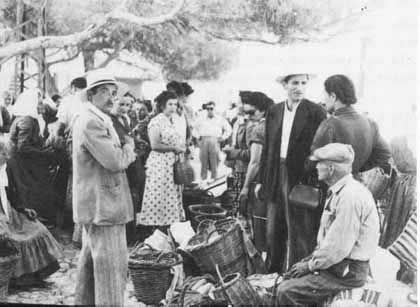

|

«Εδώ συναντούσες τον νερομυλωνά […]. Εδώ συνεννογιόσουν για το άλεσμα που θα πήγαινες στους ανεμόμυλους […]. Εδώ έδιναν την παραγγελία τους στον κοφινά για πλέξιμο καλαμοβεργοκοφινιών και καλαθιών. Στο παζάρι συμφωνούσαν σε ποιο μαντρί θα δώσουν την προβατίνα ή τη ζούλα τους. […] Στη λαϊκή αγορά του Ποταμού γινόταν προσκλητήριο αυτών που απόμειναν μετά από τα κουρσάρικα γιουρούσια. Κι όποιος κατόρθωνε να ξεφύγει απ’ της Μπαρμπαριάς τα σκλαβοπάζαρα εδώ πρωτόδινε παρόν.
Στο παζάρι ο ντελάλης φώναζε τις διαταγές των αρχόντων. […] Εδώ αποχαιρετούσαν τους συγγενείς και φίλους αυτοί που φεύγαν για τη Σμύρνη ή την Αλεξάνδρεια. Και τα τωρινά ακόμη χρόνια όσοι για την Αμερική ή την Αυστραλία φεύγουν, εδώ χύνουν του μισεμού τα δάκρυα. Κι εδώ πρωτοσυναντούν πλημμυρισμένοι από χαρά τους παιδικούς τους φίλους αυτοί που απ’ την ξενιτειά γυρίζουν. Είτε καλά είτε κακά στο παζάρι πρωτοφτάνουν απ’ όλες τις μεριές του κόσμου τα μαντάτα…»
[Τάση Κουκούλη, «Το παζάρι», στο: Προδρ. Μαντζάρου (επιμ.), Κύθηρα, εκδ. Αρίων, χ.χ., σ. 162].
|
|